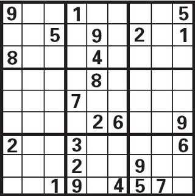
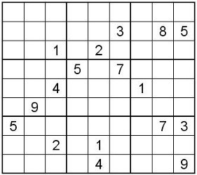

Le backtracking (retour sur trace) est une méthode communément employée pour résoudre des problèmes en programmation.
Nous allons l'étudier à travers un exemple concret : la résolution d'une grille de sudoku par ordinateur.
Pour pouvoir comprendre certaines parties de ce tutoriel, il est hautement souhaitable d'être à l'aise avec la notion de récursivité. Si ce n'est pas le cas pour vous, je vous invite à lire cet excellent tutoriel sur la récursivité de bluestorm.
Avant de commencer, permettez moi de citer la définition tirée de Wikipédia :
Citation : Wikipédia
Le retour sur trace, appelé aussi backtracking en anglais, consiste à revenir légèrement en arrière sur des décisions prises afin de sortir d'un blocage. La méthode des essais et erreurs constitue un exemple simple de backtracking. Le terme est surtout utilisé en programmation, où il désigne une stratégie pour trouver des solutions à des problèmes de satisfaction de contraintes.
Concrètement, le backtracking peut s'apparenter à un parcours en profondeur d'un arbre avec une contrainte sur les noeuds : dés que la condition n'est plus remplie sur le noeud courant, on stoppe la descente sur ce noeud.
Je sais que tout cela doit vous paraitre assez abstrait, alors qu'il s'agit d'une technique fort simple de programmation. C'est pourquoi, je vous propose d'écrire avec moi un code mettant en application ce concept : résolution d'un sudoku par force brute :) .
Supposons que nous devons écrire un programme qui permette de résoudre des grilles de sudoku.
On pourrait tenter de faire une programme "intelligent", qui remplisse la grille de façon logique. Seulement si cela est assez simple pour les sudokus faciles, il en va autrement avec les grilles plus rétives :( ... En effet, les méthodes de résolution dans ce cas seront plutôt complexes à écrire, ce qui nous amène a se demander s'il ne serait pas plus judicieux de passer directement par un brute-force.
C'est là que le problème de la complexité se pose : un brute-force est-il envisageable en pratique ? Pour N cases vides dans la grille, nous avons 9N combinaisons possibles. Un brute-force naïf semble donc assez mal parti...
C'est là qu'intervient le principe du retour sur trace. Si nous remplissons la grille au fur et à mesure, en vérifiant constamment qu'elle reste toujours potentiellement valide, on arrive assez vite à des situations de blocage ou il ne sert à rien de continuer. Dans un tel cas, on reviendra en arrière en évitant de continuer une exploration inutile. Avec cette manière de faire - appelée backtracking, le nombre de combinaisons à explorer est considérablement réduit, et le brute-force sera une solution parfaitement envisageable pour résoudre une grille de sudoku. :)
Facile à dire ! Mais concrètement, on fait comment pour revenir sur ses pas, comme tu dis ? Je viens d'essayer de coder un truc, mais c'est le gros bordel...
Effectivement, l'écriture d'un tel code n'est pas forcement évidente dés le début. Sachez surtout que nous pouvons nous servir de la récursivité pour en simplifier l'écriture. C'est d'ailleurs ce que nous allons faire dans la prochaine partie ;) !
Pour des raisons de commodité et rester accessible au plus grand nombre, j'ai choisi le langage C99/C++ pour illustrer la solution. Mais n'importe quelle personne ayant déjà codé devrait pouvoir suivre sans problème.
1e étape : structurer les données

Avant tout, nous allons prendre un exemple de grille pour pouvoir tester notre code. Pour une bête grille de sudoku, un simple tableau en 2 dimensions fera l'affaire. Voici un tableau correspondant à la grille ci-contre (les cases vides étant représentées par des zéros) :
Nous allons avoir besoin de fonctions pour tester si une valeur est bien absente d'une ligne, d'une colonne ou encore d'un bloc de la grille. Mieux vaut s'en occuper tout de suite, avant de passer au vif du sujet ;) .
La méthode la plus simple est de parcourir respectivement la ligne/colonne/bloc, et de retourner FAUX si la valeur est trouvée, sinon on retourne VRAI:
bool absentSurLigne (int k, int grille[9][9], int i)
{
for (int j=0; j < 9; j++)
if (grille[i][j] == k)
return false;
return true;
}
bool absentSurColonne (int k, int grille[9][9], int j)
{
for (int i=0; i < 9; i++)
if (grille[i][j] == k)
return false;
return true;
}
bool absentSurBloc (int k, int grille[9][9], int i, int j)
{
int _i = i-(i%3), _j = j-(j%3); // ou encore : _i = 3*(i/3), _j = 3*(j/3);
for (i=_i; i < _i+3; i++)
for (j=_j; j < _j+3; j++)
if (grille[i][j] == k)
return false;
return true;
}
3e étape : backtracking
Cette fois, nous sommes enfin arrivés à la partie vraiment intéressante ;) !
Procédons étape par étape. Nous allons tout d'abord définir le prototype de la fonction de résolution.
Prototype de la fonction
Cette fonction doit recevoir une grille en entrée et la résoudre. Doit-elle retourner quelque chose ?
Oui, car nous devons constamment vérifier que le choix fait en amont ne provoque pas de blocage en aval. On va donc utiliser le retour de la fonction pour nous indiquer si la grille est valide ou non.
Enfin, comme notre fonction doit être récursive, nous allons ajouter un paramètre pour savoir quelle case nous sommes en train de traiter. Une case (i,j) dans un tableau peut être représentée par un nombre (i*LARGEUR_TABLEAU) + j, que nous nommerons position.
Ce qui nous donne au final comme prototype :
bool estValide (int grille[9][9], int position);
Passons maintenant à l'intérieur de la fonction ;) .
Cas simples
Nous allons commencer par gérer les cas simples :
Si on a terminé de parcourir la grille, c'est qu'elle est valide, on retourne VRAI.
Si la case est déjà remplie, on passe directement à la case suivante.
bool estValide (int grille[9][9], int position)
{
// Si on est à la 82e case (on sort du tableau)
if (position == 9*9)
return true;
// On récupère les coordonnées de la case
int i = position/9, j = position%9;
// Si la case n'est pas vide, on passe à la suivante (appel récursif)
if (grille[i][j] != 0)
return estValide(grille, position+1);
// A implémenter : backtracking
}
Backtracking
Il ne reste plus qu'à gérer le retour sur trace (eh oui, je vous ai laissé le plus dur pour la fin :p ).
Considérons le problème : il nous faut énumérer tous les chiffres possibles, puis tester chaque solution éventuelle pour vérifier si elle nous amène à une solution correcte, ou bien à un blocage.
Voici le code avec actualisation de la grille :
// énumération des valeurs possibles
for (int k=1; k <= 9; k++)
{
// Si la valeur est absente, donc autorisée
if (absentSurLigne(k,grille,i) && absentSurColonne(k,grille,j) && absentSurBloc(k,grille,i,j))
{
// On enregistre k dans la grille
grille[i][j] = k;
// On appelle récursivement la fonction estValide(), pour voir si ce choix est bon par la suite
if ( estValide (grille, position+1) )
return true; // Si le choix est bon, plus la peine de continuer, on renvoie true :)
}
}
// Tous les chiffres ont été testés, aucun n'est bon, on réinitialise la case
grille[i][j] = 0;
// Puis on retourne false :(
return false;
Code complet
Allez, je vous donne un code complet pour tester chez vous :) :
#include <stdlib.h>
#include <stdio.h>
#include <stdbool.h>
// Fonction d'affichage
void affichage (int grille[9][9])
{
for (int i=0; i<9; i++)
{
for (int j=0; j<9; j++)
{
printf( ((j+1)%3) ? "%d " : "%d|", grille[i][j]);
}
putchar('\n');
if (!((i+1)%3))
puts("------------------");
}
puts("\n\n");
}
bool absentSurLigne (int k, int grille[9][9], int i)
{
for (int j=0; j < 9; j++)
if (grille[i][j] == k)
return false;
return true;
}
bool absentSurColonne (int k, int grille[9][9], int j)
{
for (int i=0; i < 9; i++)
if (grille[i][j] == k)
return false;
return true;
}
bool absentSurBloc (int k, int grille[9][9], int i, int j)
{
int _i = i-(i%3), _j = j-(j%3); // ou encore : _i = 3*(i/3), _j = 3*(j/3);
for (i=_i; i < _i+3; i++)
for (j=_j; j < _j+3; j++)
if (grille[i][j] == k)
return false;
return true;
}
bool estValide (int grille[9][9], int position)
{
if (position == 9*9)
return true;
int i = position/9, j = position%9;
if (grille[i][j] != 0)
return estValide(grille, position+1);
for (int k=1; k <= 9; k++)
{
if (absentSurLigne(k,grille,i) && absentSurColonne(k,grille,j) && absentSurBloc(k,grille,i,j))
{
grille[i][j] = k;
if ( estValide (grille, position+1) )
return true;
}
}
grille[i][j] = 0;
return false;
}
int main (void)
{
int grille[9][9] =
{
{9,0,0,1,0,0,0,0,5},
{0,0,5,0,9,0,2,0,1},
{8,0,0,0,4,0,0,0,0},
{0,0,0,0,8,0,0,0,0},
{0,0,0,7,0,0,0,0,0},
{0,0,0,0,2,6,0,0,9},
{2,0,0,3,0,0,0,0,6},
{0,0,0,2,0,0,9,0,0},
{0,0,1,9,0,4,5,7,0}
};
printf("Grille avant\n");
affichage(grille);
estValide(grille,0);
printf("Grille apres\n");
affichage(grille);
}
Le code ci-dessus est-il parfait ? Non, car on pourrait lui reprocher plusieurs points :
Pire des cas

Même si le code que nous avons écrit fournira en général la solution assez rapidement (moins d'une demi seconde chez moi), les performances dépendent totalement de la grille passée en entrée. Certaines grilles spécialement conçues peuvent lui demander beaucoup plus de travail, ce qui montre bien que la complexité dans le pire des cas n'est pas si bonne que cela.
L'image ci-contre (source - Wikipédia) est un exemple d'une telle grille. Le programme ci-dessus met chez moi environ 20 secondes pour la résoudre. La raison est que la bonne solution vient vers la fin de la descente récursive, et le nombre d'essais/erreurs est ainsi multiplié.
Pour pallier à cet inconvénient, essayons de réfléchir si l'on peut améliorer l'exploration des possibilités de manière à ce que la bonne solution sorte au plus tôt. La réponse est oui :) !
Optimisation
Considérons quelques points :
On peut ici effectuer le backtracking dans n'importe quel ordre, le choix que nous avons fait de parcourir linéairement la grille est arbitraire.
Le nombre de valeurs possibles pour chaque case vide n'est pas identique.
Plus on remplit de cases (autrement dit : plus on s'enfonce dans la récursion), plus augmentent les chances de créer un blocage.
Il apparait que si nous effectuons le backtracking depuis les cases avec un minimum de solutions vers les cases avec un maximum de solutions, nous minimisons sensiblement l'exploration des possibilités. Cette méthode garantit aussi que le backtracking sera toujours effectué de façon optimale, et nous évitons ainsi le pire des cas mentionné plus haut.
Concrètement, on peut implémenter cette méthode en créant une liste de cases vides, qui enregistre les coordonnées et le nombre de valeurs possibles de chaque case. On triera la liste en ordre croissant, puis on la passe en argument de notre fonction de backtracking.
Voici un code possible :
Implémentation des listes "maison"
////////////////////////////////////////////
// implémentation de la liste
////////////////////////////////////////////
typedef struct _list
{
int i, j;
int nbValeursPossibles;
struct _list *next;
} LIST;
// retourne un nouvel élément initialisé
static LIST* new_elem (int i, int j, int n)
{
LIST* ret = (LIST*) malloc(sizeof* ret);
if (ret != NULL)
ret->i = i, ret->j = j, ret->nbValeursPossibles = n, ret->next = NULL;
return ret;
}
// supprime intégralement une liste chainée
void liste_delete (LIST** list)
{
LIST* tmp;
while ( (tmp = *list) != NULL)
*list = (*list)->next, free(tmp);
}
// ajoute en tête
void liste_cons (LIST** list, int i, int j, int n)
{
LIST* elem = new_elem (i, j, n);
if (elem != NULL)
elem->next = *list, *list = elem;
}
// insertion dans une liste triée
void insertion (LIST** list, LIST* elem)
{
if (*list == NULL)
*list = elem, elem->next = NULL;
else if ((*list)->nbValeursPossibles < elem->nbValeursPossibles)
insertion (&(*list)->next, elem);
else
elem->next = *list, *list = elem;
}
// tri insertion sur liste chainée
LIST* list_sort (LIST* list)
{
LIST *curr, *list2 = NULL, *tmp;
for (curr = list; curr != NULL; curr = tmp)
{
tmp = curr->next;
insertion (&list2, curr);
}
return list2;
}
Code optimisé
bool absentDeLigne (int k, int grille[9][9], int i)
{
for (int j=0; j < 9; j++)
if (grille[i][j] == k)
return false;
return true;
}
bool absentDeColonne (int k, int grille[9][9], int j)
{
for (int i=0; i < 9; i++)
if (grille[i][j] == k)
return false;
return true;
}
bool absentDeBloc (int k, int grille[9][9], int i, int j)
{
int _i = i-(i%3), _j = j-(j%3); // ou encore : _i = 3*(i/3), _j = 3*(j/3);
for (i=_i; i < _i+3; i++)
for (j=_j; j < _j+3; j++)
if (grille[i][j] == k)
return false;
return true;
}
bool estValide (int grille[9][9], LIST* position)
{
// Si la liste est vide (fin de liste)
if (position == NULL)
return true;
int i = position->i, j = position->j;
for (int k=1; k <= 9; k++)
{
if ( absentDeLigne(k,grille,i) && absentDeColonne(k,grille,j) && absentDeBloc(k,grille,i,j) )
{
grille[i][j] = k;
if ( estValide(grille, position->next) )
return true;
}
}
grille[i][j] = 0;
return false;
}
// Calcule le nombre de valeurs possibles pour une case vide
int nb_possibles (int grille[9][9], int i, int j)
{
int ret = 0;
for (int k=0; k < 9; k++)
if ( absentDeLigne(k,grille,i) && absentDeColonne(k,grille,j) && absentDeBloc(k,grille,i,j) )
ret++;
return ret;
}
bool resolution (int grille[9][9])
{
// crée et remplit une liste pour les cases vides à visiter
LIST* positions = NULL;
for (int i=0; i < 9; i++)
for (int j=0; j < 9; j++)
if ( grille[i][j] == 0 )
liste_cons ( &positions, i, j, nb_possibles2(grille, i, j) );
// Trie la liste (ordre croissant)
positions = list_sort (positions);
// Appelle la fonction de backtracking récursive estValide()
bool ret = estValide (grille, positions);
// Détruit la liste
liste_delete (&positions);
// retourne le resultat
return ret;
}
2eme optimisation
Un autre point que l'on pourrait reprocher à notre code, c'est sa méthode couteuse pour tester si le nombre à insérer est absent de la ligne/colonne/bloc. En effet, cette fonction est dite "critique", car étant au coeur de la récursion, elle est appelée de très nombreuses fois. On a donc fort intérêt à l'optimiser...
Dans notre code, la méthode employée requiert au pire des cas un parcours de toute les cases de ces dernières, ce qui représente tout de même 27 cases. On peut améliorer sensiblement en mémorisant les valeurs présentes dans chaque ligne/colonne/bloc.
Si nous construisons au départ une liste des valeurs possibles pour chaque ligne/colonne/bloc, en utilisant des tableaux pour matérialiser ces listes, nous bénéficions d'un temps de lecture/écriture en O(1). Le test de possibilité d'insertion d'une valeur se fait alors en 3 opérations, ce qui est un gain considérable. Même en prenant en compte l'actualisation des listes au cours de la descente récursive, sachant que l'on fera bien plus de tests que d'actualisations, cette solution sera meilleure que celle proposée plus haut.
Exemple :
Code avec optimisation 1 et 2
// Variables globales (tableaux) pour la mémorisation
bool existeSurLigne[9][9];
bool existeSurColonne[9][9];
bool existeSurBloc[9][9];
bool estValide (int grille[9][9], LIST* position)
{
if (position == NULL)
return true;
int i = position->i, j = position->j;
for (int k=0; k < 9; k++)
{
// Vérifie dans les tableaux si la valeur est déjà présente
if ( !existeSurLigne[i][k] && !existeSurColonne[j][k] && !existeSurBloc[3*(i/3)+(j/3)][k] )
{
// Ajoute k aux valeurs enregistrées
existeSurLigne[i][k] = existeSurColonne[j][k] = existeSurBloc[3*(i/3)+(j/3)][k] = true;
if ( estValide(grille, position->next) )
{
// Ecrit le choix valide dans la grille
grille[i][j] = k+1;
return true;
}
// Supprime k des valeurs enregistrées
existeSurLigne[i][k] = existeSurColonne[j][k] = existeSurBloc[3*(i/3)+(j/3)][k] = false;
}
}
return false;
}
// Calcule le nombre de valeurs possibles pour une case vide
int nb_possibles (int grille[9][9], int i, int j)
{
int ret = 0;
for (int k=0; k < 9; k++)
if ( !existeSurLigne[i][k] && !existeSurColonne[j][k] && !existeSurBloc[3*(i/3)+(j/3)][k] )
ret++;
return ret;
}
bool resolution (int grille[9][9])
{
// Initialise les tableaux
for (int i=0; i < 9; i++)
for (int j=0; j < 9; j++)
existeSurLigne[i][j] = existeSurColonne[i][j] = existeSurBloc[i][j] = false;
// Enregistre dans les tableaux toutes les valeurs déjà présentes
int k;
for (int i=0; i < 9; i++)
for (int j=0; j < 9; j++)
if ( (k = grille[i][j]) != 0)
existeSurLigne[i][k-1] = existeSurColonne[j][k-1] = existeSurBloc[3*(i/3)+(j/3)][k-1] = true;
// crée et remplit une liste pour les cases vides à visiter
LIST* positions = NULL;
for (int i=0; i < 9; i++)
for (int j=0; j < 9; j++)
if ( grille[i][j] == 0 )
liste_cons ( &positions, i, j, nb_possibles(grille, i, j) );
// Trie la liste (ordre croissant)
positions = list_sort (positions);
// Appelle la fonction de backtracking récursive estValide()
bool ret = estValide (grille, positions);
// Détruit la liste
liste_delete (&positions);
// retourne le resultat
return ret;
}
Concernant la résolution logicielle de sudokus
Le code fourni ici pourrait, avec de légères modification, servir à vérifier que le nombre de solutions d'un sudoku ne dépasse pas 1. Pour cela, il suffit de retourner non pas si la grille est valide ou non, mais plutôt le nombre de solutions possibles. Je vous laisse trouver tout seul comment faire ;) .
Aussi, pensez qu'un backtracking appliqué à une grille vide fournit une grille remplie (la première possible). En assignant à chaque case une liste de valeurs ordonnée aléatoirement pour l'énumération des possibilités, on peut obtenir une grille remplie aléatoirement. Mais cela n'est pas l'objet de ce tuto ;) ...
Bien entendu, il est possible de mettre en place des algorithmes plus sophistiqués pour résoudre un sudoku. Vous pouvez évidement vous inspirer des méthodes de résolution utilisées par les vrais joueurs pour cela (exemples : ici et là).
Enfin, pour les curieux, sachez que le problème de savoir s'il existe une solution pour une grille de sudoku est classé NP-complet, ce qui revient à dire qu'aucune méthode n'est connue à ce jour pour trouver efficacement la réponse pour une grille N2*N2 avec N un peu grand (même s'il n'existe pas non plus de preuve que ce soit impossible :p ).
Conclusion
Comme vous avez pu le voir, cette méthode du retour sur trace permet de résoudre certains types de problèmes assez facilement et efficacement. Et nous avons vu par ailleurs que cette technique reste quand même assez limitée.
Décider si une solution de ce type est adaptée à un problème n'est pas toujours aussi évident que pour le problème du sudoku. L'étape de modélisation d'un problème reste très importante, et seule une bonne modélisation du problème permettra de savoir si le backtracking est une solution potentielle ou non.
Pour vous familiariser avec le backtracking et ses subtilités, vous pouvez aller voir ces autres grands classiques : problème des N reines, perles de Dijkstra...